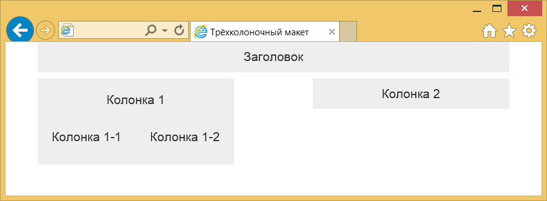

Модульные сетки
Bootstrap характерен своей продуманной и гибкой системой модульных сеток, в основе которой лежит 12-колоночный макет.

Колонки одинаковой ширины
Сами колонки не обязательно должны иметь одинаковую ширину, можно комбинировать любое число колонок, главное, чтобы они в сумме давали 12.

Колонки разной ширины
Создание колонок
Так, чтобы создать макет из трёх колонок используем <div> с классом container, внутри которого будут располагаться наши колонки. Сами колонки находятся внутри <div> с классом row и содержат имена вида col-xs-N, где N — число колонок от 1 до 12 (пример 1).
Пример 1. Макет с тремя колонками
<!doctype html>
<html>
<head>
<meta charset="utf-8">
<title>Трёхколоночный макет</title>
<link href="css/bootstrap.min.css" rel="stylesheet">
<style>
[class*="col-"] {
background-color: #eee;
border-right: 2px solid #fff;
text-align: center;
padding-top: 15px;
padding-bottom: 15px;
font-size: 2rem;
}
</style>
</head>
<body>
<div class="container">
<div class="row">
<div class="col-xs-3">3 колонки</div>
<div class="col-xs-7">7 колонок</div>
<div class="col-xs-2">2 колонки</div>
</div>
</div>
<script src="js/jquery.min.js"></script>
<script src="js/bootstrap.min.js"></script>
</body>
</html>Стиль добавлен лишь для наглядного выделения колонок.
Класс container создаёт макет фиксированной ширины, значение которой зависит от размера устройства. Для мониторов максимальная ширина составляет 1170 пикселей, для смартфонов макет будет занимать всю доступную ширину. Если вам не требуется ограничивать ширину макета, то вместо класса container следует использовать container-fluid (пример 2).
Пример 2. Резиновый макет
<div class="container-fluid">
<div class="row">
<div class="col-xs-4">4 колонки</div>
<div class="col-xs-6">6 колонок</div>
<div class="col-xs-2">2 колонки</div>
</div>
</div>Отступы между колонок
Колонки изначально плотно прилегают друг к другу, что не всегда полезно для макета. Для добавления пустого пространства между колонками предназначен класс col-xs-offset-N, где N изменяется от 0 до 12. Отступ добавляется слева от текущей колонки (пример 3).
Пример 3. Добавление отступов
<div class="container">
<div class="row">
<div class="col-xs-3">3 колонки</div>
<div class="col-xs-5 col-xs-offset-1">5 колонок</div>
<div class="col-xs-2 col-xs-offset-1">2 колонки</div>
</div>
</div>Результат данного примера в браузере показан на рис. 3.

Рис. 3. Колонки с отступами между ними
Помните, что отступы добавляются к общему числу колонок, сумма которых не должна превышать 12, в противном случае колонки начнут перемещаться на другую строку.
Сдвиг колонок
Каждую колонку можно сдвигать влево или вправо на указанное число колонок. Опять же это делается с помощью классов. col-xs-pull-N — сдвигает колонку влево на заданное число, а col-xs-push-N сдвигает вправо (пример 4). Здесь N может меняться от 0 до 12.
Пример 4. Сдвиг колонок вправо
<div class="container">
<div class="row">
<div class="col-xs-3">3 колонки</div>
<div class="col-xs-5 col-xs-push-1">5 колонок</div>
<div class="col-xs-2 col-xs-push-2">2 колонки</div>
</div>
</div>Заметьте, что сдвиг это не дополнительная колонка как при использовании offset, так что суммировать все значения не нужно. Ещё надо следить за тем, чтобы колонки не накладывались друг на друга.
Вложенные колонки
При вёрстке сложных макетов двенадцати колонок может не хватить, к тому же в одной колонке могут встречаться ещё дополнительные. Так что нам потребуются вложения одних колонок в другие. Делается это похожим образом (пример 5).
Пример 5. Вложенные колонки
<div class="container">
<div class="row">
<div class="col-xs-12">Заголовок</div>
<div class="col-xs-5">
<div class="row">
<div class="col-xs-12">Колонка 1</div>
<div class="col-xs-6">Колонка 1-1</div>
<div class="col-xs-6">Колонка 1-2</div>
</div>
</div>
<div class="col-xs-5 col-xs-offset-2">Колонка 2</div>
</div>
</div>Чтобы создать вложенные колонки опять добавляем <div> с классом row, который содержит желаемую структуру вложенных колонок. Таким образом можно сверстать какие угодно сложные макеты.
Заметьте, что заголовок заполняет всю ширину макета, потому что он занимает все 12 колонок. Дополнительный контейнер row для подобных вещей вводить не обязательно, перенос остальных колонок на другую строку произойдет автоматически (рис. 4).

Рис. 4. Вложенные колонки